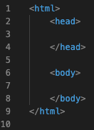
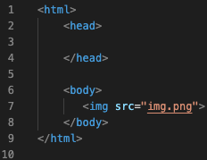
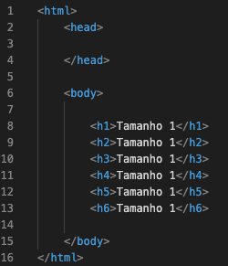
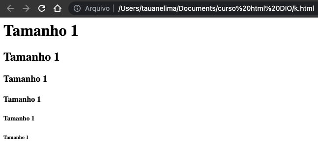
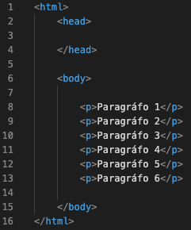
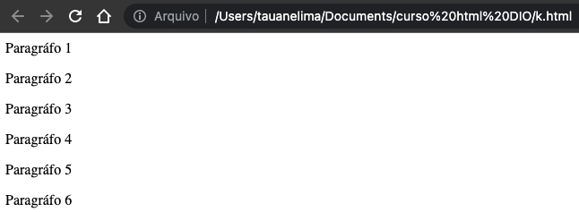
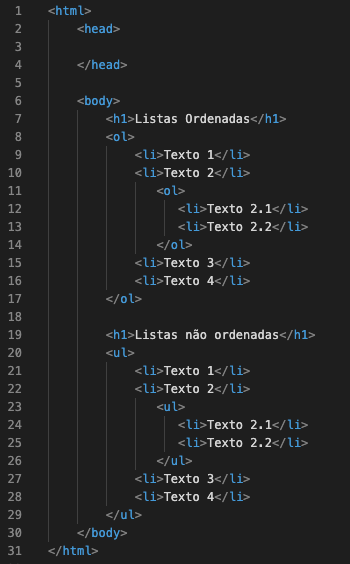
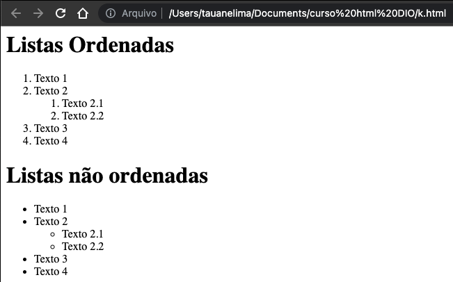
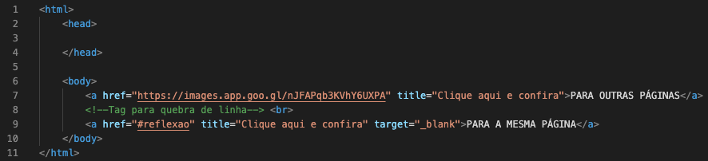
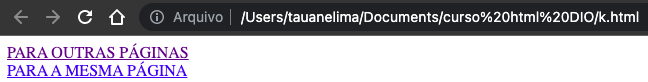

HTML!
Códigos HTML
Um documento HTML é composto por tags, as quais possuem um nome e aparecem entre os sinais "< e >", como vimos na aula, por exemplo, em < html >, < head > e < body >. Segue abaixo uma imagem ilustrativa do exemplo:

Também vimos que algumas tags precisam ser abertas e fechadas, como no exemplo acima. Nesse caso, a tag de fechamento deve conter a barra / antes do nome. Outras, porém, não precisam ser fechadas, como a tag < input > e < img >. Segue abaixo uma imagem ilustrativa do exemplo < img >:

voltar ao início
TEXTOS
Os textos são normalmente utilizados para identificar páginas e seções e possuem aparência diferenciada do restante do texto. No HTML há seis níveis de cabeçalhos/títulos que podem ser utilizados por meio das tags h1, h2, h3, h4, h5 e h6, sendo h1 o maior/mais relevante e h6 o menor/menos relevante. Segue exemplo abaixo:
 
Temos também os parágrafos de texto que são gerados na HTML por meio das tags < p > < /p >. Esse é um exemplo de tag cuja disposição na tela se dá em forma de bloco, ou seja, um parágrafo é posto sempre abaixo do outro. Segue exemplo abaixo:
 
voltar ao início
LISTAS ORDENADAS E NÃO ORDENADAS
Listas são elementos úteis para organizar e ordenar itens que estão relacionados de alguma forma. No HTML é possível criar dois tipos de listas: ordenadas (com a tag < ol >), não ordenadas (com a tag < ul >). Segue Exemplos:
 
voltar ao início
LINK
Links são normalmente utilizados para direcionar o usuário para outras páginas, ou para outras partes da mesma página. Nos dois casos, utilizamos a tag < a >, que possui o atributo href="" no qual indicamos o destino daquele link. Segue Exemplos:


voltar ao início